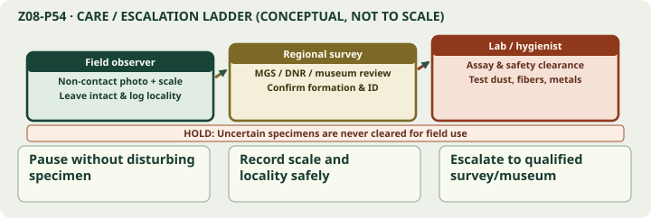

Z08-P54 · Rocks, minerals and materials · New manuscript
Unidentified Material Hold and Escalation Workflow
Apply a fail-closed hold protocol whenever a rock, mineral, soil, or wood specimen cannot be safely and lawfully identified in the field.
When it applies · All uncertain geological or material encounters.
Equipment · Camera, metric scale, GPS/notebook, handwashing supplies.

Actions
- Leave unidentified rocks, fibrous outcrops, metallic crusts, or suspect soils undisturbed in place rather than breaking or pocketing unknown samples.[R07, R08, R14]
- Document non-contact wide and close-up photographs with metric scale, GPS, and landform notes for submission to a geological survey or university museum.[R19]
- Maintain explicit HOLD status on any operational use of an unidentified material until a qualified geologist, soil lab, or industrial hygienist verifies safety.[R07, R12, R19]
Failure recognition · Guessing or improvising uses for unknown materials introduces preventable silica, asbestos, heavy-metal, or spalling injuries.[R06, R07, R14]
Verify · Uncertain specimens stay undisturbed with complete photographic locality records and explicit HOLD status.[R19]
Stop or change course · Stop immediately and wash hands if unexpected dust, fibers, chemical odor, or skin irritation occurs near an unknown material.[R06, R07, R14]
Evidence and editorial notes
- R06 · NIOSH / CDC · Crystalline Silica Respiratory Dust Hazards (2024)
- Section: Overview; Exposure · Conditions: Silica-bearing material disturbed by cutting, grinding, or similar dust-producing work
Support: Respirable crystalline silica exposure can cause silicosis and other disease. Avoid creating dust during field recognition.
Limitations: Hazardous particles may be invisible. Wind, casual wetting and a mask alone do not establish exposure control. · Conflicting evidence: Conditions are recorded in the A03 audit.
Editorial note: Mandatory Z08 silica/eye safety gate. · Specialist reviewer: Industrial hygienist and geologist
Primary source · checked 2026-11-25 - R07 · U.S. EPA · Learn About Asbestos and Naturally Occurring Mineral Fibers (2025)
- Section: Naturally occurring asbestos and fibrous minerals · Conditions: Outcrops, fibrous veins, serpentinite, and iron-formation rock
Support: Naturally occurring asbestiform mineral fibers pose severe inhalation risks if disturbed, broken, or abraded.
Limitations: Field sight alone cannot distinguish benign fibrous minerals from regulated asbestos; leave fibrous mineral veins undisturbed. · Conflicting evidence: None noted.
Editorial note: Mandatory Z08 mineral-fiber stop rule. · Specialist reviewer: Industrial hygienist and mineralogist
Primary source · checked 2026-11-25
Current assessment · A04-R07 (2026-11-25) · Bounded support confirmed (A04): EPA identifies asbestos in rock and soil and health risks from airborne inhalation. Appearance cannot establish airborne exposure or absence. Limits: Specialist review PENDING (Industrial hygienist and mineralogist); publication HOLD. All release decisions pending. - R08 · National Park Service / eCFR · 36 CFR 2.1 Preservation of Natural, Cultural and Archeological Resources (Current CFR)
- Section: 36 CFR 2.1 natural resource collecting prohibitions · Conditions: National Parks, Monuments, and federal recreation areas
Support: Collecting rocks, minerals, fossils, wood, or natural specimens is prohibited on National Park System lands unless specifically authorized.
Limitations: Rules vary across USFS, BLM, state, tribal, county, and private lands; check the governing land manager before taking any sample. · Conflicting evidence: None noted.
Editorial note: Prevents unlawful federal resource extraction. · Specialist reviewer: Public-lands resource manager
Primary source · checked 2026-11-25 - R12 · U.S. EPA · Protect Your Family from Lead in Soil and Dust (2025)
- Section: Soil contamination and urban/industrial lead hazards · Conditions: Soils near historic structures, roadways, mines, or industrial sites
Support: Soils and clays near older painted structures, smelters, tailings, or roadways may harbor lead or industrial contaminants.
Limitations: Visual texture or color cannot detect lead, arsenic, or chemical contaminants; do not use unverified soil/clay for cookware or food contact. · Conflicting evidence: None noted.
Editorial note: Separates clay plasticity checks from chemical safety. · Specialist reviewer: Environmental health and soil scientist
Primary source · checked 2026-11-25
Current assessment · A04-R12 (2026-11-25) · Bounded support confirmed from an alternate source (A04): The source classes can contaminate nearby soil. Local concentration and clay material suitability require sampling or verified product evidence. Limits: Specialist review PENDING (Environmental health and soil scientist); publication HOLD. All release decisions pending. - R14 · USGS · National Minerals Information Center and Mineral Commodities (Current web edition)
- Section: Metallic ores, sulfides, and heavy-metal mineral toxicity · Conditions: Unidentified metallic-luster minerals, tailings, or bright oxidized crusts
Support: Sulfide ores and metallic minerals can contain lead, arsenic, mercury, or copper compounds hazardous via dust or hand-to-mouth transfer.
Limitations: Do not taste, lick, burn, or process unidentified metallic or brightly crusted minerals; wash hands after handling. · Conflicting evidence: None noted.
Editorial note: Blocks hazardous mineral extraction/handling. · Specialist reviewer: Geochemist and toxicologist
Primary source · checked 2026-11-25
Current assessment · A04-R14 (2026-11-25) · Open: support partial or missing (A04): No exposure or toxicological operator section for the combined ore claim. Need exact material mineralogy and mapped site exposure. Limits: Specialist review PENDING (Geochemist and toxicologist); publication HOLD. All release decisions pending. - R19 · USGS · Collecting Rocks: Rock Classes and Mineral Property Basics (USGS GIP)
- Section: Specimen documentation, scale, and locality recording · Conditions: Documenting geological specimens for reference or museum review
Support: Recording locality, host formation, metric scale, fresh vs weathered surface, and non-destructive traits preserves scientific value.
Limitations: A photograph or hand sample without locality and scale rarely permits definitive identification of fine-grained rocks. · Conflicting evidence: None noted.
Editorial note: Defines Z08 specimen voucher protocol. · Specialist reviewer: Curatorial geologist
Primary source · checked 2026-11-25
Source lineage · New manuscript (Z08 P16 escalation workflow) · Classification · New manuscript.